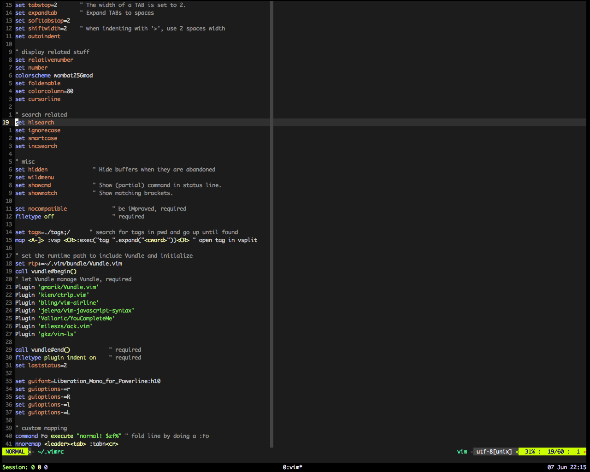

Vim: .vimrc
This is part 6 of a series of tutorial to Vim. You can read Part 5 here.
*
Before we get to our main topic, let me show you one more humble, but tremendously
useful command. Hit * to search the word currently under cursor and jump to
its next occurrence. This is, as I said previously, tremendously useful1,
to find where a variable/function is used/called. The analogous command to search
backwards is #.
DNA
Like your DNA, which defines you, your appearance, hair color, eye color, strength
and weakness; .vimrc defines your Vim's appearance, behavior, strength and weakness.
Your Vim will be very different from my Vim and not just in outer superficial
appearance, like color of cursor or background, but also how it responds. For
example, you can, if you want, make your Vim to not respond to arrow keys to force
yourself to use 'h, k, j, l'.
You can save your .vimrc somewhere accessible from everywhere, like say Github,
and when you want to setup new system, or a remote server, you can simply drop
your .vimrc in home folder (~) and make yourself home.
Bells and Whistles
Let's start with configuring how Vim looks. Vim supports color schemes, which can
be set using command :colorscheme <scheme name>, or via .vimrc. There are some
basic colorschemes preinstalled, but you can add more. Vim colorschemes are
nothing more than a .vim file, like Vim plugins. Download them and place them
in ~/.vim/colors/. Once files are placed, you can use the command :colorscheme
to enable it. You can directly search for your favorite color scheme or browse
them here or here.
If you don't like something with a colorscheme, you are encouraged to open it up, and play around with it. And then, contribute it back to the main repository. If you didn't like something, chances are there are many other who didn't like it too.
Plugins
Vim has amazing ecosystem of plugins. Plugins for Vim can be created using VimL- Vim's own scripting language and there is support for Python, Lua too. It is highly likely that your favorite feature, like the folder tree view in Sublime2, automatic syntax checker3 or a fuzzy file finder4; are available in Vim via plugins5.
Plugin to manage Plugins
There are plugins which makes installing, updating and removing plugins very easy.
I personally like Vundle, but there are other plugins managers too. You can find
how to install at the home page, but to describe it in a line, you have to install
Vundle by cloning the repository into ~/.vim/bundle/Vundle.vim, add plugin to
.vimrc and say :PluginInstall.
My .vimrc
Here's a part of my .vimrc which might be a good starting point for building
your own. You can check the complete version here: github.com/anuragpeshne/dotfiles/.vimrc.
syntax on
" indentation related and coding style
set tabstop=2 " The width of a TAB is set to 2.
set expandtab " Expand TABs to spaces
set softtabstop=2
set shiftwidth=2 " when indenting with '>', use 2 spaces width
set autoindent
" display related stuff
set relativenumber
set number
colorscheme wombat256mod
set foldenable
set colorcolumn=80
set cursorline
" search related
set hlsearch
set ignorecase
set smartcase
set incsearch
" misc
set hidden " Hide buffers when they are abandoned
set wildmenu
set showcmd " Show (partial) command in status line.
set showmatch " Show matching brackets.
set nocompatible " be iMproved, required
filetype off " required
set tags=./tags;/ " search for tags in pwd and go up until found
map <A-]> :vsp <CR>:exec("tag ".expand("<cword>"))<CR> " open tag in vsplit
A Few Comments:
- First few lines deal with tabs and space, you may want to change it.
relativenumberis a very helpful feature while working with Vim. You can easily specify ranges to yank, delete or jump by glancing at the line.- If you rather have simple line numers, delete the line
set relativenumberand keepset number.
- If you rather have simple line numers, delete the line
- We'll see folds soon, which is enabled by
set foldenable. colorcolumncreates a vertical line on buffer which reminds us to restrict width of lines. Some projects have hard rules to keep split lines more than 80 columns into two. I highly recommend you to set this limit to 80 to 120 columns.- Next come some handy flags for better searching:
hlsearchhighlights all matched itemsignorecasedoes exactly what it sayssmartcaseis an interesting option, it ignores case until you type a capital letter and as soon as you do it, it starts matching case too.
- You can check how to specify plugins in my
.vimrc.

Figure 1: Vim after loading the above .vimrc. Click here to see full size image
{kind=link}
One More Thing
You might by hopping around buffer using *, searching and jumping to lines. Sometimes
we are working on certain line, we want to check something and then return to
original position. And with all this hops, it might be cumbersome to remember how
many times you jumped, but have no fear, there is an easy way to return back.
Pressing <ctrl>+o will take you back to previous position where you jumped from,
just like back button on browser. <ctrl>+i will take you forward, once you have
jumped back.
Summary
A small summary of commands we have seen in this part
| Key | Comment |
|---|---|
* |
searches for the word under cursor |
# |
same as above, in reverse direction |
<ctrl> + o |
jump back to previous position (mnemonic: o → old) |
<ctrl> + i |
jump forward to previous position from which jumped back |
Footnotes: